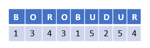
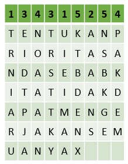
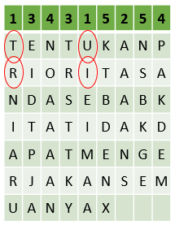

6. Transposisi Myzkowski
Myzkowski merupakan pengembangan dari teknik transposisi kolom. Teknik ini ditemukan oleh Émile Victor Théodore Myszkowski di tahun 1902. Pengembangan yang dilakukan adalah perubahan dalam pendefinisian dan permutasi kata kuncinya.
Misalnya kata kunci “NUSWANTORO” jika didefinisikan dengan teknik transposisi kolom akan menghasilkan urutan abjad 2 9 7 10 1 3 8 4 6 5. Namun jika kita menggunakan teknik transposisi myzkowski, kata kunci tersebut akan didefinisikan dengan hasil 2 7 5 8 1 2 6 3 4 3.
Pada teknik Myszkowski, huruf yang muncul berulang memiliki indeks urutan yang sama. Sementara itu proses permutasi atau pengambilan ciphertext pada indeks yang sama dilakukan dengan pengambilan secara zig-zag.
Cara Kerja
Misalkan kita memiliki teks “TENTUKAN PRIORITAS ANDA SEBAB KITA TIDAK DAPAT MENGERJAKAN SEMUANYA X” dengan kunci “BOROBUDUR”, maka proses pengenkripsiannya adalah sebagai berikut
Dari kata “BOROBUDUR” akan didefinisikan urutan abjadnya sebagai berikut : 1 3 4 3 1 5 2 5 4

Setelah itu kita akan membuat tabel yang panjangnya menyesuaikan dengan panjang kuncinya. Kemudian memasukkan setiap urutan kata kunci ke dalam baris paling atas, dan memasukkan Plainteks ke dalam tabel dengan urut dari kiri ke kanan.

Lalu baca dari urutan kunci yang paling kecil, jika hanya terdapat 1 nomor urut kunci makan membacanya dari atas ke bawah, jika lebih dari 1 maka cara membacanya dengan zig-zag.

Dari proses transposisi maka didapatkan cipherteks sebagai berikut: TURIN EIIAM RAUAA AAANS ETIRD STTPT JKNYN POAAK ADAEA MNKNT SBBDK EGNEX
Implementasi Pada Python
Import library
import numpy as npDeklarasi urutan huruf dalam alfabet
abjad = {'a': 1, 'b': 2, 'c': 3, 'd': 4, 'e': 5, 'f': 6, 'g': 7, 'h': 8, 'i': 9, 'j': 10, 'k': 11, 'l': 12, 'm': 13,
'n': 14, 'o': 15, 'p': 16, 'q': 17, 'r': 18, 's': 19, 't': 20, 'u': 21, 'v': 22, 'w': 23, 'x': 24, 'y': 25, 'z': 26}Memasukkan plaintext
plaintext_myzkowski = input("Masukkan teks yang ingin dienkripsi: ")Menghilangkan spasi ganda dan mengubah plaintext menjadi uppercase
plaintext_myzkowski = plaintext_myzkowski.replace(" ", " ").upper()
print(plaintext_myzkowski)Memasukkan kunci
key_myzkowski = input("Masukkan kunci: ")Menghilangkan spasi dalam kunci
key_myzkowski = key_myzkowski.replace(" ", "")
print(key_myzkowski)Pemrosesan Kunci
Membuat urutan dari tiap huruf di kunci
sortkey = []
kolom = 0
# Perulangan untuk menambahkan urutan huruf kunci ke list sortkey
for huruf in key_myzkowski:
# Periksa apakah karakter saat ini adalah huruf alfabet
if huruf.isalpha():
sortkey.append(abjad[huruf.lower()])
kolom = kolom+1
print(f"Urutan kunci dari kata '{key_myzkowski}' adalah: {sortkey}")Menghitung jumlah kemunculan tiap huruf di kunci
# Membuat dictionary untuk melacak jumlah kemunculan setiap nilai
count_key = {}
for nilai in sortkey:
# Jika nilai sudah ada dalam dictionary, tambahkan 1 ke jumlahnya
if nilai in count_key:
count_key[nilai] += 1
# Jika nilai belum ada dalam dictionary, tambahkan ke dictionary dengan jumlah 1
else:
count_key[nilai] = 1
print(count_key)Membuat urutan kolom dalam kunci
hasil_kunci = [None] * len(key_myzkowski)
i = 0
n = 1
while i<len(key_myzkowski):
non_none_values = list(filter(lambda x: x is not None, sortkey))
if non_none_values:
nilai_terkecil = min(non_none_values)
if count_key[nilai_terkecil]>1:
for j in range(count_key[nilai_terkecil]):
marker = sortkey.index(nilai_terkecil)
hasil_kunci[marker] = n
sortkey[marker] = None
nilai_terkecil = min(non_none_values)
else:
marker = sortkey.index(nilai_terkecil)
hasil_kunci[marker] = n
sortkey[marker] = None
else:
break
n+=1
i+=1
print(hasil_kunci)Penjelasan prosesnya - hasil_kunci adalah list yang panjangnya sama dengan key_myzkowski dan diisi dengan None. List ini akan diisi dengan nomor urut sesuai urutan karakter dalam key_myzkowski.
while i < len(key_myzkowski):
non_none_values = list(filter(lambda x: x is not None, sortkey))while i < len(key_myzkowski): Loop ini akan berjalan hingga semua karakter dalamkey_myzkowskidiproses.non_none_values: List yang berisi nilai darisortkeyyang tidakNone.sortkeyadalah list yang berisi urutan karakterkey_myzkowskiyang telah diurutkan.filter(lambda x: x is not None, sortkey)digunakan untuk mendapatkan nilai yang valid (bukanNone).
if non_none_values:
nilai_terkecil = min(non_none_values)- Jika
non_none_valuestidak kosong, berarti masih ada karakter yang perlu diproses. nilai_terkeciladalah nilai terkecil dalamnon_none_values. Ini digunakan untuk menentukan urutan karakter yang akan diberi nomor.
if count_key[nilai_terkecil] > 1:
for j in range(count_key[nilai_terkecil]):
marker = sortkey.index(nilai_terkecil)
hasil_kunci[marker] = n
sortkey[marker] = None
nilai_terkecil = min(non_none_values)if count_key[nilai_terkecil] > 1: Jikanilai_terkecilmemiliki pengulangan (count_key[nilai_terkecil]adalah jumlah pengulangan karakter tersebut dalamkey_myzkowski).for j in range(count_key[nilai_terkecil]): Loop untuk memproses setiap pengulangan karakter.marker = sortkey.index(nilai_terkecil): Temukan indeks darinilai_terkecildisortkey.hasil_kunci[marker] = n: Beri nomor urutnpada posisi yang sesuai dihasil_kunci.sortkey[marker] = None: Tandai posisi yang telah diproses dengan None agar tidak diproses lagi di iterasi berikutnya.nilai_terkecil = min(non_none_values): Updatenilai_terkecildengan nilai terkecil berikutnya darinon_none_values.
else:
marker = sortkey.index(nilai_terkecil)
hasil_kunci[marker] = n
sortkey[marker] = None- Jika
nilai_terkeciltidak memiliki pengulangan (count_key[nilai_terkecil]adalah 1), cukup tandai posisimarkerdihasil_kuncidengann, dan ubah nilai disortkeymenjadiNone.
Proses Enkripsi
Membuat susunan plaintext sesuai dengan panjang kunci
# membuat variabel list kosong
enkripsi = []
# perulangan untuk membagi plaintext menjadi potongan-potongan sepanjang panjang kunci dan menyimpan potongan-potongan tersebut ke dalam list
for i in range (0, len(plaintext_myzkowski), len(key_myzkowski)):
x = plaintext_myzkowski[i:i+len(key_myzkowski)]
x = list(x)
enkripsi.append(x)
# perulangan untuk menambahkan # ke dalam list enkripsi index terakhir jika panjangnya kurang dari panjang kunci
while len(enkripsi[len(enkripsi)-1])<len(key_myzkowski):
enkripsi[len(enkripsi)-1].append(" ")
print(hasil_kunci)
for row in enkripsi:
print(row)Menghitung jumlah kemunculan tiap angka dalam kunci
# Membuat dictionary untuk melacak jumlah kemunculan setiap nilai
count_hasil_kunci = {}
# Loop melalui setiap nilai dalam list
for nilai in hasil_kunci:
# Jika nilai sudah ada dalam dictionary, tambahkan 1 ke jumlahnya
if nilai in count_hasil_kunci:
count_hasil_kunci[nilai] += 1
# Jika nilai belum ada dalam dictionary, tambahkan ke dictionary dengan jumlah 1
else:
count_hasil_kunci[nilai] = 1
# Cetak dictionary yang berisi jumlah kemunculan setiap nilai
print(count_hasil_kunci)Proses pengenkripsian susuna plainteks
hasil_enkripsi = []
# perulangan untuk menentukan hasil enkripsi
i = 0
while i < len(key_myzkowski):
non_none_values = list(filter(lambda x: x is not None, hasil_kunci))
if non_none_values:
nilai_terkecil = min(non_none_values)
if count_hasil_kunci[nilai_terkecil] == 1:
marker = hasil_kunci.index(nilai_terkecil)
for j in range(len(enkripsi)):
hasil_enkripsi.append(enkripsi[j][marker])
hasil_kunci[marker] = None
else:
temp = []
for k in range(i, count_hasil_kunci[nilai_terkecil] + i):
marker = hasil_kunci.index(nilai_terkecil)
temp.append(marker)
hasil_kunci[marker] = None
nilai_terkecil = min(non_none_values)
for j in range(len(enkripsi)):
for indeks in temp:
hasil_enkripsi.append(enkripsi[j][indeks])
i += 1
hasil_enkripsi = ''.join(hasil_enkripsi)
print("Hasil Enkripsi = ", hasil_enkripsi)Penjelasan prosesnya:
while i < len(key_myzkowski):
non_none_values = list(filter(lambda x: x is not None, hasil_kunci))while i < len(key_myzkowski): Loop ini berjalan selamaikurang dari panjangkey_myzkowski.non_none_values: List ini berisi nilai-nilai darihasil_kunciyang bukanNone, yang menandakan kolom yang belum diproses.
if count_hasil_kunci[nilai_terkecil] == 1:
marker = hasil_kunci.index(nilai_terkecil)
for j in range(len(enkripsi)):
hasil_enkripsi.append(enkripsi[j][marker])
hasil_kunci[marker] = Noneif count_hasil_kunci[nilai_terkecil] == 1: Jikanilai_terkecilhanya muncul sekali (tidak ada pengulangan).marker = hasil_kunci.index(nilai_terkecil): Temukan indeks darinilai_terkecildihasil_kunci.for j in range(len(enkripsi)): Loop melalui setiap baris dalam matriksenkripsi.hasil_enkripsi.append(enkripsi[j][marker]): Tambahkan karakter di kolommarkerdari setiap baris kehasil_enkripsi.hasil_kunci[marker] = None: Tandai kolom ini sebagai sudah diproses dengan mengubah nilai dihasil_kuncimenjadiNone.
else:
temp = []
for k in range(i, count_hasil_kunci[nilai_terkecil] + i):
marker = hasil_kunci.index(nilai_terkecil)
temp.append(marker)
hasil_kunci[marker] = None
nilai_terkecil = min(non_none_values)
for j in range(len(enkripsi)):
for indeks in temp:
hasil_enkripsi.append(enkripsi[j][indeks])else: Jikanilai_terkecilmuncul lebih dari sekali.temp = []: List sementara untuk menyimpan indeks kolom yang akan diproses.for k in range(i, count_hasil_kunci[nilai_terkecil] + i): Loop untuk menambahkan semua indeks kolom yang memiliki nilainilai_terkecilketemp.marker = hasil_kunci.index(nilai_terkecil): Temukan indeks darinilai_terkecildihasil_kunci.temp.append(marker): Tambahkan indeksmarkerketemp.hasil_kunci[marker] = None: Tandai kolom ini sebagai sudah diproses dengan mengubah nilai dihasil_kuncimenjadiNone.nilai_terkecil = min(non_none_values): Updatenilai_terkecildengan nilai terkecil berikutnya darinon_none_values.for j in range(len(enkripsi)): Loop melalui setiap baris dalam matriksenkripsi.for indeks in temp: Loop melalui setiap indeks yang disimpan ditemp.hasil_enkripsi.append(enkripsi[j][indeks]): Tambahkan karakter di kolomindeksdari setiap baris kehasil_enkripsi.
hasil_enkripsi = ''.join(hasil_enkripsi)
print("Hasil Enkripsi = ", hasil_enkripsi)hasil_enkripsi = ''.join(hasil_enkripsi): Gabungkan semua karakter dihasil_enkripsimenjadi satu string.print("Hasil Enkripsi = ", hasil_enkripsi): Cetak hasil enkripsi.
Proses Dekripsi
Memasukkan cipherteks
chipertext_myzkowski = input("Masukkan teks yang ingin dienkripsi: ")Proses membuat list yang berisi kunci dan nomor urut hurufnya
# membuat variabel list kosong
dekripsi = []
key_myzkowski = list(key_myzkowski)
# menambahkan kunci ke dalam list dekripsi
dekripsi.append(key_myzkowski)
# menambahkan list kosong yang akan berisi nomor urutan dari tiap abjad kunci
dekripsi.append([])
# perulangan untuk menambahkan urutan nomor dari tiap abjad kunci
i = 0
while i<len(key_myzkowski):
dekripsi[1].append(i+1)
i+=1
print(dekripsi)Outputnya:
[['u', 'd', 'i', 'n', 'u', 's', 'u', 'n', 'g', 'g', 'u', 'l'], [1, 2, 3, 4, 5, 6, 7, 8, 9, 10, 11, 12]]Mengurutkan isi list berdasarkan dari list pertama yang berisi kunci
dekripsi = np.array(dekripsi)
dekripsi = dekripsi [ :, dekripsi[0].argsort()]
dekripsi = dekripsi.tolist()
print(dekripsi)Outputnya:
[['d', 'g', 'g', 'i', 'l', 'n', 'n', 's', 'u', 'u', 'u', 'u'], ['2', '9', '10', '3', '12', '4', '8', '6', '1', '5', '7', '11']]Menghitung jumlah frekuensi abjad dari list yang berisi kunci
count_key_decrypt = {}
for nilai in dekripsi[0]:
# Jika nilai sudah ada dalam dictionary, tambahkan 1 ke jumlahnya
if nilai in count_key_decrypt:
count_key_decrypt[nilai] += 1
# Jika nilai belum ada dalam dictionary, tambahkan ke dictionary dengan jumlah 1
else:
count_key_decrypt[nilai] = 1
print(count_key_decrypt)Membaca karakter dari ciphertext dan menempatkannya ke dalam list dekripsi berdasarkan kunci yang telah diuraikan
indeks = 0
i = 0
# perulangan untuk menambahkan abjad ciphertext ke dalam list berdasarkan kunci dan jumlah frekuensi abjad kunci
while i<len(key_myzkowski):
if count_key_decrypt[dekripsi[0][i]]>1:
for k in range(2,int((len(chipertext_myzkowski)/len(key_myzkowski))+2)):
for j in range(count_key_decrypt[dekripsi[0][i]]):
dekripsi[k].append(chipertext_myzkowski[indeks])
indeks+=1
i+=(count_key_decrypt[dekripsi[0][i]]-1)
else:
for k in range(2, int((len(chipertext_myzkowski) / len(key_myzkowski)) + 2)):
dekripsi[k].append(chipertext_myzkowski[indeks])
indeks+=1
i+=1
print(dekripsi)Penjelasan prosesnya:
while i < len(key_myzkowski):
if count_key_decrypt[dekripsi[0][i]] > 1:while i < len(key_myzkowski): Loop ini berjalan selamaikurang dari panjangkey_myzkowski.if count_key_decrypt[dekripsi[0][i]] > 1: Memeriksa apakah karakter pada posisiididekripsi[0](baris kunci) memiliki pengulangan. Jika iya, berarti kita akan menangani kolom yang berulang.
for k in range(2, int((len(chipertext_myzkowski) / len(key_myzkowski)) + 2)):
for j in range(count_key_decrypt[dekripsi[0][i]]):
dekripsi[k].append(chipertext_myzkowski[indeks])
indeks += 1
i += (count_key_decrypt[dekripsi[0][i]] - 1)for k in range(2, int((len(chipertext_myzkowski) / len(key_myzkowski)) + 2)): Loop melalui setiap baris dalam listdekripsi, dimulai dari baris kedua. Perulangan ini dilakukan sesuai dengan jumlah kolom dan panjang ciphertext.for j in range(count_key_decrypt[dekripsi[0][i]]): Loop ini dilakukan sesuai dengan jumlah pengulangan karakter yang sama dalam kunci.dekripsi[k].append(chipertext_myzkowski[indeks]): Tambahkan karakter darichipertext_myzkowskipada posisi indeks ke bariskdalam listdekripsi.indeks += 1: Updateindeksuntuk karakter berikutnya.i += (count_key_decrypt[dekripsi[0][i]] - 1): Lewati jumlah karakter pengulangan dikey_myzkowski.
else:
for k in range(2, int((len(chipertext_myzkowski) / len(key_myzkowski)) + 2)):
dekripsi[k].append(chipertext_myzkowski[indeks])
indeks += 1else: Jika karakter pada posisiididekripsi[0]tidak memiliki pengulangan.for k in range(2, int((len(chipertext_myzkowski) / len(key_myzkowski)) + 2)): Loop melalui setiap baris dalam listdekripsi, dimulai dari baris kedua.dekripsi[k].append(chipertext_myzkowski[indeks]): Tambahkan karakter darichipertext_myzkowskipada posisiindekske bariskdalam listdekripsi.indeks += 1: Updateindeksuntuk karakter berikutnya.
Outputnya:
[['d', 'g', 'g', 'i', 'l', 'n', 'n', 's', 'u', 'u', 'u', 'u'], ['2', '9', '10', '3', '12', '4', '8', '6', '1', '5', '7', '11'], ['E', 'N', 'F', 'K', 'R', 'N', 'I', 'K', 'T', 'I', ' ', 'O'], ['A', 'D', 'I', 'T', 'U', 'I', 'U', 'A', 'M', 'K', ' ', 'N'], [' ', ' ', ' ', ' ', ' ', ' ', ' ', ' ', 'S', ' ', ' ', ' ']]Mengurutkan list dekripsi berdasarkan nilai pada list kedua dan kemudian menggabungkan karakter dari dekripsi untuk menghasilkan teks dekripsi akhir
dekripsi = np.array(dekripsi)
# mengurutkan list berdasarkan list kedua dan menampilkan hasil dari dekripsinya
dekripsi = dekripsi [ :, dekripsi[1].astype(int).argsort()]
hasil_dekripsi = []
for index, row in enumerate(dekripsi):
if index != 0 and index != 1:
print(row)
for i in range(2,len(dekripsi)):
for j in range(len(dekripsi[0])):
hasil_dekripsi.append(dekripsi[i][j])
hasil_dekripsi = ''.join(hasil_dekripsi)
print("\nHasil Dekripsi = ", hasil_dekripsi)Penjelasan Prosesnya:
dekripsi = np.array(dekripsi):dekripsidikonversi menjadi array NumPy untuk memudahkan manipulasi data, terutama untuk sorting.
dekripsi = dekripsi[:, dekripsi[1].astype(int).argsort()]dekripsi[:, ...]: Mengambil semua baris (:) daridekripsi, tetapi hanya kolom yang diurutkan berdasarkan baris kedua.dekripsi[1]: Mengambil baris kedua daridekripsi, yang berisi nilai-nilai kunci yang digunakan untuk pengurutan..astype(int): Mengonversi nilai di baris kedua menjadi tipe integer jika belum dalam tipe ini, agar bisa diurutkan..argsort(): Mengembalikan indeks yang akan mengurutkan array. Indeks ini digunakan untuk mengurutkandekripsiberdasarkan nilai di baris kedua.
for index, row in enumerate(dekripsi):
if index != 0 and index != 1:
print(row)for index, row in enumerate(dekripsi): Loop ini berjalan melalui setiap baris dalamdekripsi.if index != 0 and index != 1: Memeriksa apakah indeks tidak sama dengan 0 atau 1, karena baris ini adalah kunci dan mungkin tidak perlu ditampilkan atau diproses lebih lanjut.print(row): Mencetak baris yang relevan untuk melihat hasil sementara daridekripsi.
for i in range(2, len(dekripsi)):
for j in range(len(dekripsi[0])):
hasil_dekripsi.append(dekripsi[i][j])for i in range(2, len(dekripsi)): Loop melalui barisdekripsidimulai dari baris ketiga, karena baris pertama dan kedua adalah kunci dan pengurutan.for j in range(len(dekripsi[0])): Loop melalui setiap kolom dalam barisdekripsi.hasil_dekripsi.append(dekripsi[i][j]): Menambahkan karakter dari posisi(i, j)didekripsikehasil_dekripsi.
hasil_dekripsi = ''.join(hasil_dekripsi)
print("\nHasil Dekripsi = ", hasil_dekripsi)hasil_dekripsi = ''.join(hasil_dekripsi): Menggabungkan semua karakter dihasil_dekripsimenjadi satu string.print("\nHasil Dekripsi = ", hasil_dekripsi): Mencetak hasil dekripsi akhir.